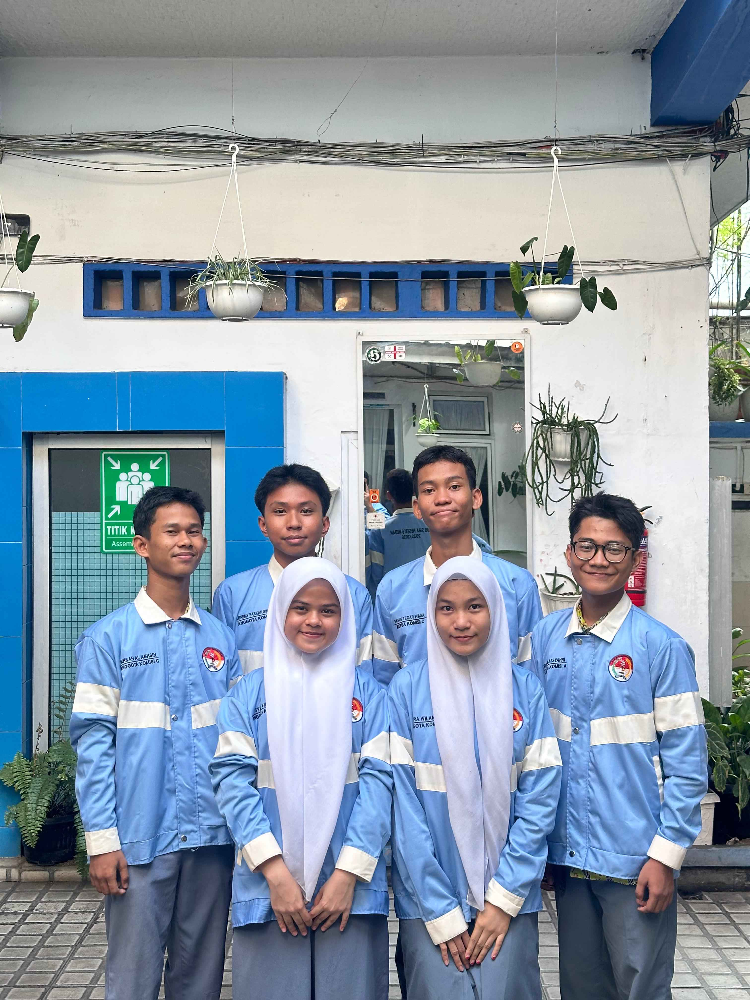

MPK SMAN 6 MEDAN
Pelopor Resmi Pengaduan Siswa SMA NEGERI 6 Medan
Pelopor Resmi Pengaduan Siswa SMA NEGERI 6 Medan
Mengawasi OSIS

Komisi C MPK merupakan komisi yang bertugas mengawasi kinerja dan pelaksanaan program OSIS agar berjalan sesuai dengan AD/ART yang berlaku.